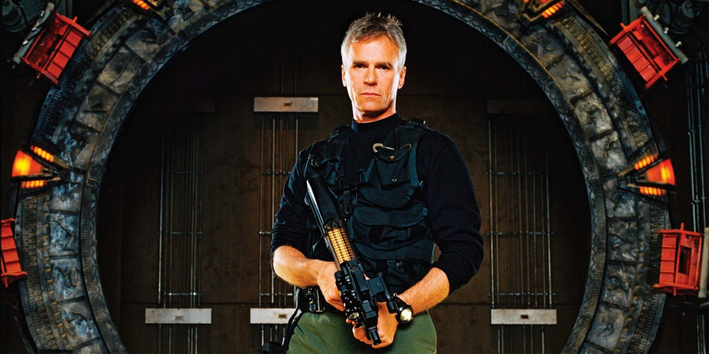
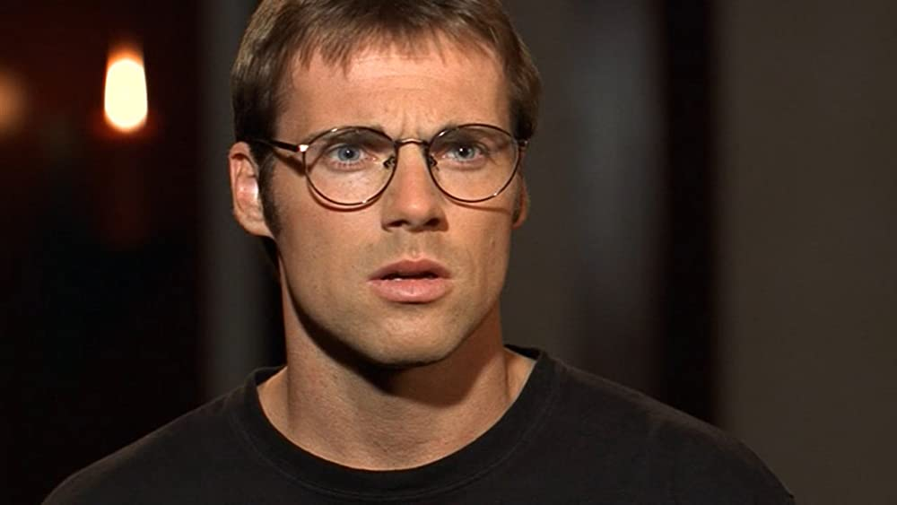
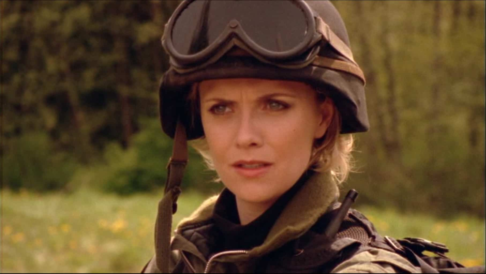
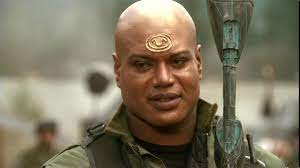

The story of Stargate SG-1 begins about a year after the events of the feature film when the United States government learns that an ancient alien device called the Stargate can access a network of such devices on a multitude of planets and in space. SG-1 is an elite United States Air Force special operations team, one of about 20 teams from Earth who explore the galaxy and defend against alien threats such as the Goa'uld, the Replicators and the Ori. The series draws upon Egyptian, Greek and Norse mythology, as well as the legend of King Arthur.
Show Characters and Bio

Jack O'Neill
Name: Jack O'Neill
About: Lieutenant General, USAF, is a fictional character in the military science fiction franchise Stargate, and primarily one of the main characters of the television series Stargate SG-1. He is most known as portrayed by actor Richard Dean Anderson, who played O'Neill in all the Stargate media since 1997, when he took over the role from actor Kurt Russell, who portrayed the character in the original Stargate film in 1994

Daniel Jackson
Name: Daniel Jackson
About: He is portrayed by James Spader in the 1994 film Stargate, and by Michael Shanks in Stargate SG-1 and other SG-1 derived media. Jackson is the only Stargate character to appear in all of the films and series in the franchise (not including the non-canonical Stargate Infinity)

Samantha Carter
Name: Samantha Carter
About: Played by Amanda Tapping, she appears in all three shows in the franchise: Stargate SG-1, Stargate Atlantis, and Stargate Universe. She was a main character in all ten seasons of Stargate SG-1 (1997–2007)

Teal'c
Name: Teal'c
About: Portrayed by Christopher Judge, Teal'c is a Jaffa warrior from the planet Chulak. As a Jaffa, Teal'c is a genetically modified human with an abdominal pouch that serves as an incubator for a larval Goa'uld. The larval symbiote grants enhanced strength, health, healing, and longevity; Teal'c is around 100 years old during the show's run and ages an additional 50 years in the final SG-1 episode.